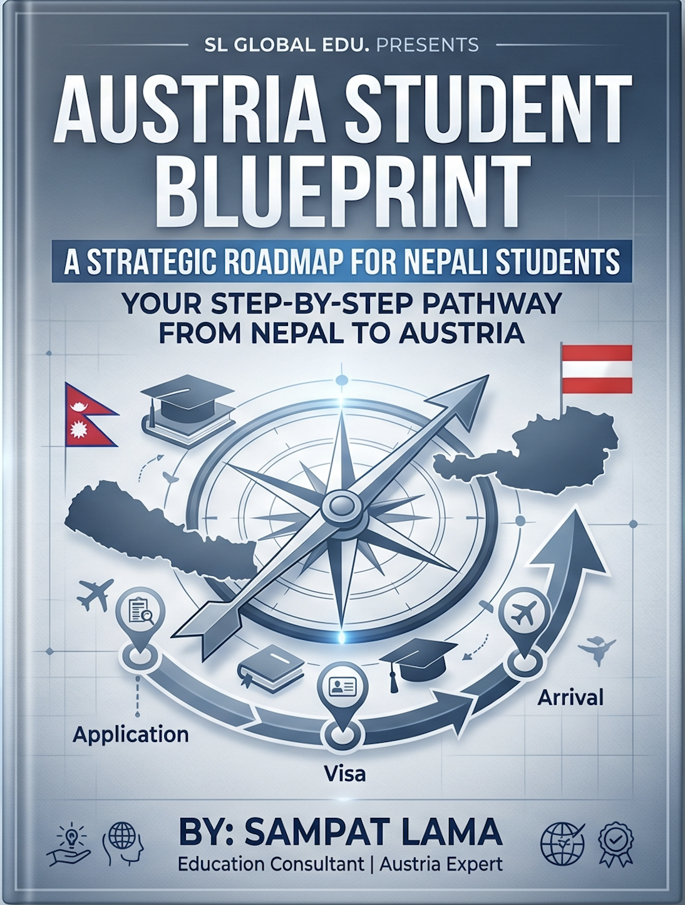

I help Nepali students navigate university admissions, visas, scholarships, and life in Austria — from first inquiry to arrival.
Austria offers world-class education, affordable tuition, and a gateway to Europe — let me help you get there.
From choosing the right university to landing in Vienna, I guide you through every step of the process.
Find the right Bachelor's or Master's program in Austria that matches your academic background and career goals.
Complete assistance with applications, motivation letters, CV writing, and document preparation for Austrian universities.
Step-by-step guidance through the Austrian student visa process, including documentation and embassy interview preparation.
Identify scholarships and funding opportunities for Nepali students studying in Austria, including OeAD and university grants.
Guidance on finding student housing, dormitories, and apartments in Austrian cities like Vienna, Graz, and Innsbruck.
Everything you need before you fly — packing, banking, health insurance, and connecting with Nepali communities in Austria.
A clear, structured journey from your first question to your first day at an Austrian university.
We discuss your academic background, goals, budget, and preferred programs.
I create a personalised roadmap and help you prepare and submit your applications.
I guide you through collecting documents and applying for your Austrian student visa.
Pre-departure briefing and ongoing support after you land in your new home.
I'm a dedicated education consultant helping Nepali students achieve their dream of studying in Austria. Having navigated the Austrian education and immigration system myself, I understand the challenges Nepali students face — and I'm here to make the process smooth, clear, and stress-free.
I provide honest, personalised guidance, not just generic advice. Whether you're looking at Bachelor's programs in Artificial Intelligence, Master's degrees in business, or anything in between, I'll help you find the right fit and get there.
My consultations are available online, so no matter where you are in Nepal, I can help you.
Answers to the most common questions from Nepali students about studying in Austria.
Many public Austrian universities charge minimal tuition fees (around €726/semester) compared to the UK or Australia, making Austria one of the most affordable options in Europe.
Many Master's programs are fully in English. Bachelor's programs are mostly in German, though more English-taught options are growing every year.
Yes! Student visa holders can work up to 20 hours per week, which helps cover living costs while studying.
It's manageable with proper preparation. The key is having the right documents ready. That's exactly where I help — guiding you step by step.
For English-taught programs, no. For German-taught programs, you'll need proof of German proficiency (usually B2 level). I can guide you on language preparation too.
On average, students need €699–€800/month for accommodation, food, transport, and other expenses. Vienna is slightly more expensive than Graz or Innsbruck.
Have questions? Fill out the form or reach out directly. The first consultation is always free.
Email me at
sampatlama0@gmail.com
Serving students across
Nepal → Austria
Online consultations available
Zoom, Google Meet, or WhatsApp
